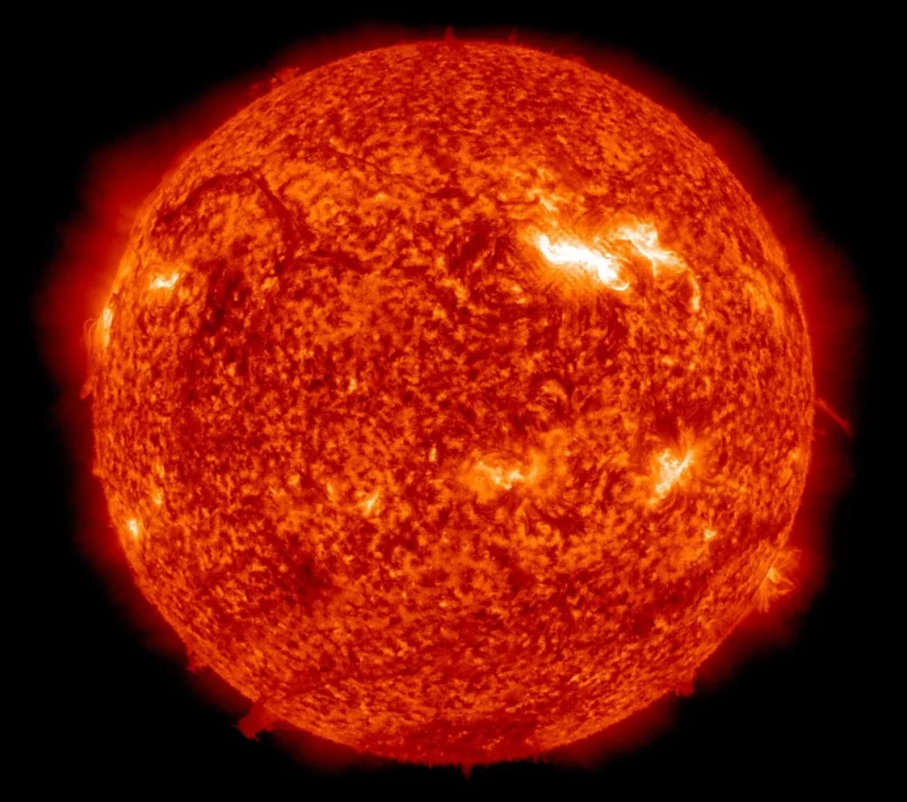

Stephenson 2-18 on üks suurimaid teadaolevaid tähti universumis. See on punane ülihiid, mis asub Maast tuhandete valgusaastate kaugusel. Täht on Päikesest palju suurem ja heledam. Kui Stephenson 2-18 asuks meie Päikese asemel, ulatuks selle tohutu suurus kaugele üle Maa orbiidi. Selle tähe uurimine aitab teadlastel paremini mõista, kuidas väga suured tähed tekivad, arenevad ja lõpuks oma elu lõpetavad.